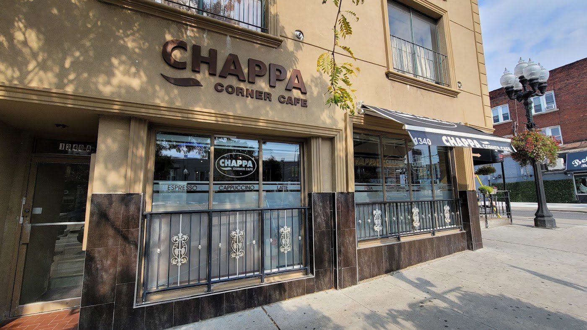

Portuguese cafe & restaurant · 1340 St Clair Ave W
Portuguese food, soccer on the TVs, late into the night.
Chappa Corner Cafe is at 1340 St Clair Avenue West. Google describes it as a Portuguese eatery serving traditional fare and screening TV soccer, with weekend DJ dance nights. Reviewers also mention chef Rodrigo and private parties. Call (416) 900-1314.
- Portuguese food
- Cafe & bar
- Soccer on TV
- Weekend DJ nights
- Private parties
What’s at Chappa
Traditional Portuguese food
Google’s description calls it a Portuguese eatery serving traditional fare. Saba Habibi wrote that it is “a great spot for traditional Portuguese food” in a “cozy and rustic” room, and she also mentioned pasta Alfredo. Droxzy wrote, “the chef Rodrigo made my day.” Ron St. Germaine, in a Google review copied by CanadaResto, named Rodrigo, Nayara and Isabel on the staff.
A cafe on the corner, and a restaurant door around the side
Google lists the business as a cafe, under the name Chappa Corner Cafe. The windows on St Clair say Espresso, Cappuccino and Latte. A hanging sign at the 1340 corner says Chappa Restaurant and points to a separate door, which you can see in the photos. Ivan Yushin wrote that the restaurant “could easily be confused with Chappa Bar, which sits right on the corner itself.”
Soccer, weekend DJ nights, and parties
Google’s own description says the cafe screens TV soccer and has weekend DJ dance nights. Aries M. called it “an amazing venue for any kind of party” and wrote that “the Portuguese food is absolutely delicious.” Mariano Silva, in a Google review copied by CanadaResto, was there for a birthday and wrote that “the server (Nayara) was super amazing.”
Services above come from Google’s listing category and description (read 2026-11-17), from signs visible in the listing and review photos, and from Google reviews read on the listing or copied by CanadaResto. No prices or menu are listed here. Call (416) 900-1314 if you have questions about a table or a party.
1340 St Clair Avenue West
Look for the arrow if you are coming for the restaurant
Open daily, 9 a.m. to 2 a.m. (hours on Google today)
The corner door is numbered 1340, with a Portuguese flag and the Chappa Corner Cafe sign above. A hanging sign reads Chappa Restaurant and points to the right, toward a separate entrance under a black canopy. The hours on this page are the ones on Google today; some directories list shorter dining-room hours, which are noted under Hours. Google’s phone number is (416) 900-1314; other listings show different numbers, also noted there.
“An amazing venue for any kind of party! The atmosphere is warm and lively, making it perfect for celebrations. The Portuguese food is absolutely delicious—fresh, flavorful, and beautifully presented.”
Aries M., Google review (as of Nov 17, 2026). Quoted as written.
What customers say
4.4 ★ from 230 Google reviews (checked Nov 17, 2026). Quotes are word for word. Each one says where it was read: on the Google listing itself, or on a public page that copies reviews. Google shows only a handful of reviews without signing in, so some quotes are Google reviews copied by the CanadaResto directory. Recent 1-star and 3-star copies are included, not only the 5-star ones.
★★★★★
Chappa Restaurant is a great spot for traditional Portuguese food at reasonable prices. The atmosphere is cozy and rustic, and the dishes are flavorful with a nice homemade touch.
Surprisingly, they also have one of the best pasta Alfredo… rich, creamy, and generously portioned.
Overall, great value for the quality. Worth a visit.
★★★★★
I was there today June 24 I was amazed at how good the food was the chef Rodrigo made my day
The food he prepared was amazing I literally almost needed a nap after eating highly recommended great guy amazing food and staff
★★★★★
An amazing venue for any kind of party! The atmosphere is warm and lively, making it perfect for celebrations. The Portuguese food is absolutely delicious—fresh, flavorful, and beautifully presented. From the traditional dishes to the desserts, everything was a hit with our guests. The staff were friendly, attentive, and made sure the event ran smoothly. Great service, great food, and a fantastic vibe. Highly recommended for anyone looking for a memorable party venue! Ask for Lino. He’ll give you the best deal👍
★★★★
Chappa Restaurant is a relatively small place, probably seating around 40–50 people. It’s located just around the corner and could easily be confused with Chappa Bar, which sits right on the corner itself. The restaurant could definitely use a bit of a face-lift, and a proper website would help as well.
If there happens to be a party in the room, even a small one, the noise level rises quickly and can become quite noticeable.
Interestingly, there is no wine list or appetizers section on the menu.
The tableware isn’t new, but it’s still quite nice and pleasant.
As a complimentary starter, two types of bread were served with olives and house-made tuna pâté. The pâté was quite good - mixed with pickles and a bit of mayonnaise to overcome tuna’s dryness (not the most traditional way to prepare pâté, but certainly workable) and finished with some pleasantly zesty notes.
Costeletas de Vitela – Veal Cutlet with Salad
The portion was generous: two veal chops cooked to a medium-rare doneness. They were tender and very juicy, though still pleasantly chewy. The dish can be ordered with either rice and salad or fries and salad; I chose to have it only with salad, which was simple but freshly prepared.
Overall, I would say the prices are very reasonable. Because of that, the value is quite good, despite the restaurant’s imperfections.
★★★★
The food was amazing, the people here were very nice and attempting. The atmosphere could be a little updated, but overall, I have a good experience and will go back.
★★★★★
Very genuine Portuguese restaurant. We had a birthday, the server (Nayara) was super amazing.
Owner was there and came to greet.
★★★★★
This is my favourite Portuguese restaurant in the city…the food is out of the world and top shelve when it comes to old school authentic Portuguese prepared by the best chef with the love and passion of someone the truly cares about every dish…the owner treat me like family and a friend and the staff from Rodrigo, Nayara, to Isabel treat us like royalty! This spot is a hidden gem and a treasure…this will be the hottest spot to take in the entire World Cup! Oh yeah!
★★★★★
Killed the food shrimp and bread nuttsss😂
★★★
Great atmosphere, nice server. But they took really long to bring our order and the place wasn’t busy when we got our sandwiches they were cold. The sandwich wasn’t that good either.
★
Takes toooo long.
The room, and the plates
Real photos from Chappa Corner Cafe’s public Google listing and its customers’ reviews. Tap to enlarge. Menu photos that showed prices were left out of this gallery.
Visit Chappa Corner Cafe
1340 St Clair Ave W
Toronto, ON M6E 1C4
Corso Italia–Davenport
| Monday | 9 a.m.–2 a.m. |
|---|---|
| Tuesday | 9 a.m.–2 a.m. |
| Wednesday | 9 a.m.–2 a.m. |
| Thursday | 9 a.m.–2 a.m. |
| Friday | 9 a.m.–2 a.m. |
| Saturday | 9 a.m.–2 a.m. |
| Sunday | 9 a.m.–2 a.m. |
These are the hours on Google today: 9 a.m. to 2 a.m., every day. CanadaResto and exa.ai list shorter “dining room” hours (noon to 9 p.m. Monday to Thursday, noon to 10 p.m. Friday and Saturday, noon to 3 p.m. Sunday). The phone number on Google is (416) 900-1314. Luso Connect lists (416) 652-6134, and Apple Maps lists (416) 652-1525. If you are coming late, or you want the restaurant room rather than the corner cafe, please call the Google number first.